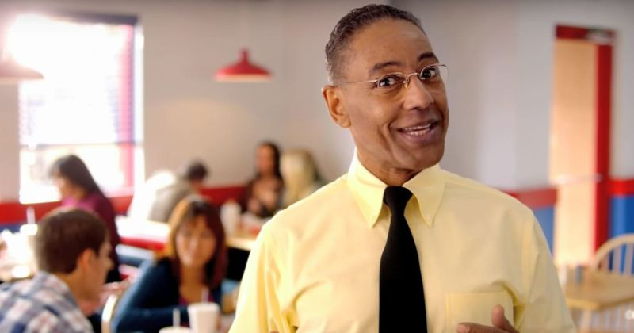
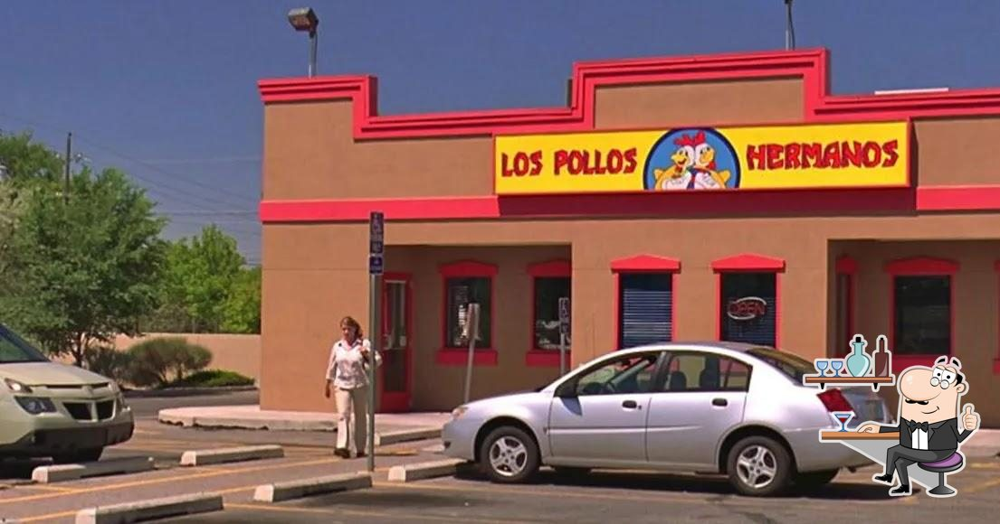
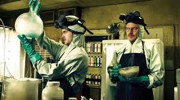

Наша история

Густаво Фринг
Основатель и владелец Los Pollos Hermanos
Основана в 1989 году Густаво Фрингом и его партнером. Густаво родился в Чили и переехал в США в начале 1980-х годов, принеся с собой уникальные рецепты и страсть к созданию идеально прожаренной курицы.
"То, что выходит с нашей кухни, - это то, чем я действительно горжусь. Идеально приправленная курочка, обжаренная до совершенства на подсолнечном масле."
— Густаво Фринг, Основатель

Наш первый ресторан, 1989 год
Первая команда, 1990 год

Секретный процесс приготовления
Наша философия основана на качестве, последовательности и исключительном обслуживании.
Под руководством Густаво компания выросла из одного небольшого ресторана в самую узнаваемую сеть ресторанов быстрого питания в Нью-Мексико.